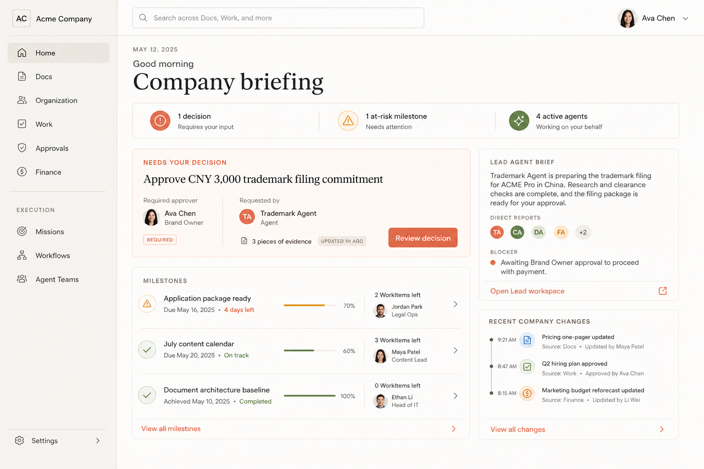

V2.1 不反对工作台。它保留完整功能与信息密度，同时通过视觉节奏、角色识别和触感更好的控件，让工作台更舒服、更美、更值得长时间使用。
功能深度保留Document、Milestone、WorkItem、Agent、Approval 与执行入口都在。
认知负担降低减少等权边框，建立一个首屏焦点和更清楚的阅读顺序。
美感成为生产力稳定头像、温暖材质、排版和留白提高停留意愿与专注度。
Company Home
从管理面板到真正的每日工作简报


Docs Workspace
功能仍然完整，但文档纸面成为主工作区


Lead Agent Workspace
长期组织协作工作台，而不是卡片化审计日志


Canonical Agent identity assets
生成效果图中的小头像只是布局示意；最终 HTML 和产品实现必须直接使用以下稳定资产与 ActorRef，不从截图重建身份。
 Company LeadLead Agent
Company LeadLead Agent Document ArchitectureStanding Agent
Document ArchitectureStanding Agent FinanceStanding Agent
FinanceStanding Agent Content StrategyStanding Agent
Content StrategyStanding Agent TrademarkProposed Standing Agent
TrademarkProposed Standing Agent下一道门禁不是“是否像工作台”，而是：这个工作台是否让人一眼理解、愿意进入、能长时间舒服使用，同时不牺牲任何关键业务能力。